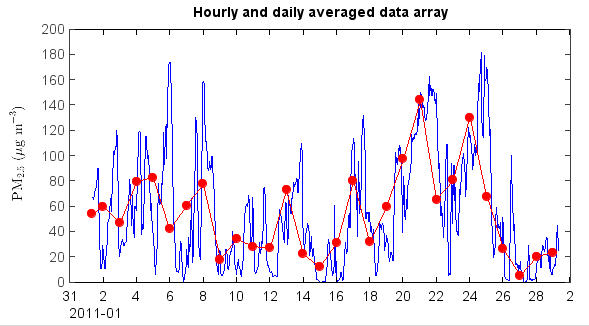

Average data ignoring flagged points¶
The flag codes can be used to make flag array using makearray() function. The values will be
assigned as 1 for normal data points and the values are Nan for flagged data points in the flag
array. Then make a new PM2.5 array with Nan value of flagged points by mutiply PM2.5 array and
the flag array. The new PM2.5 array were assigned in the table as ‘PM2.5’ column values. Then
hourly and daily average data tables can be generated by ave_hour() and ave_day() functions of
the table object. The time column name is ‘Date’ in the generated tables. The averaged data array
can be plotted with time x axis.
print 'Read table data...'
fn = r'D:\MyProgram\Distribution\Java\MeteoInfo\MeteoInfo_Run\toolbox\OutlierFlag\sample\54826PMMUL201102_T.txt'
table = readtable(fn, delimiter=',', format='%{yyyyMMddHHmm}D%14i%11f%i%f%i%4f%i%3f')
print 'QA/QC...'
pm2_5 = table['PM2.5']
fset = qaqc.flagset(minlim=-10)
fcodes = qaqc.check_all(pm2_5, fset)
fdata = qaqc.makearray(fcodes)
pm2_5 = pm2_5 * fdata
table['PM2.5'] = pm2_5
print 'Average...'
have = table.ave_hour(['PM2.5'])
dave = table.ave_day(['PM2.5'])
hdata = have['PM2.5']
htt = have['Date']
ddata = dave['PM2.5']
dtt = dave['Date']
print 'Plot...'
plot(htt, hdata, '-b')
plot(dtt, ddata, '-ro')
ylabel(r'$\rm{PM_{2.5}} \ (\mu g \ m^{-3})$')
xaxis(axistype='time')
The plot for averaged PM2.5 data.
